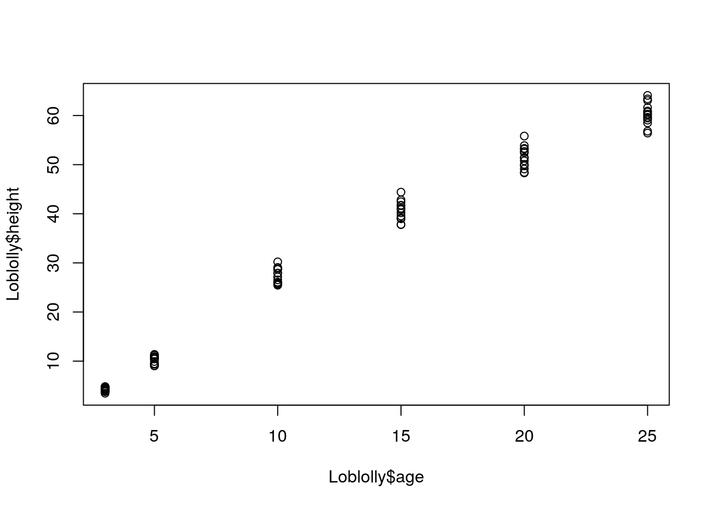

For my first blogpost, I will write about how you can actually write python code in R! The python and R code can communicate between each other by using the proper tag on the code chuncks and libraries.
Both R and pyhton will knit interactively if the "reticulate" library is used. Additionally,
Here is some example base R with the "Loblolly" datset below:
plot(Loblolly$age,Loblolly$height)
Now in Python, I will run a code that finds the deflection of a bicycle pedal made of ABS Plastic and PVC. The code lets the user control the magnitude and angle of the force. If your curious, the deflection is found using "Castigliano's Method", which is a method of finding the deflection of 3-D beams using energy integrals. I wrote this for an Engineering Design course in which we were required to create DIY home exercise equipment for the pandemic.
To code Python in an Rmarkdown chunk, at the beginning of the Rmarkdown code chunck, type "{python}" where "```{r}" typically is. Notice, that the python code, will still knit even though this is an Rmarkdown file.
import math
P_newton = 20 # force (this is what we change!!!)
theta_deg = 90 #degree (should be between 0 -20) #directly down
P = P_newton/4.448 #lbf
theta = theta_deg*(math.pi/180) #radian
d = 0.63 # diameter (inches)
A = math.pi*((d/2)**2) # cross section area (in^2) circle
A0 = 3.77 * 0.72 #cross section area (in^2) rectangle
I = (math.pi * (d**4))/64 #moment of interia (in^4) circle
I0 = (3.77*((0.72)**3))/12 #moment of interia (in^4) rectangle
J = (math.pi * (d**4))/32 #polar moment of interia (in^4)) circl
J0 = (3.77*0.72*((3.77**2)+(0.72**2)))/12 #polar moment of interia rectangle
E0 = 2000000000/6895 #elastic modulus of abs plastic; psi = pa/6895
E = 2410000000/6895 #elastic mod of pvc; psi = pa/6895
v0 = 0.394 # poisson ratio of abs plastic
v = 0.3825 # poisson ratio of pvc
G = E/(2*(1+v)) #shear modulus of pvc (psi)
G0 = E0/(2*(1+v0)) #shear mod of abs (psi)
C = 1.11 #circular cross section (castigliano - shear)
C0 = 1.2 #rectabgular cross section (castigliano - shear)
x0 = 3.937
x1 = 0.94 #inch
x2 = 5.9427 #inch
x3 = 2.36 #inch
t = 0.72
deflect2 = ((P*math.cos(theta)*(x1**3))/(3*E*I)) + ((P*math.sin(theta)*(x1**3))/(3*E*I)) + \
((P*math.cos(theta)*(x2**3))/(3*E*I)) + ((P*math.sin(theta)*(x1**2)*x2)/(G*J)) + \
((P*math.cos(theta)*x2)/(A*E)) + ((P*math.cos(theta)*(x3**3))/(3*E*I)) + \
((P*math.sin(theta)*(x2**2)*x3)/(G*J)) + \
(P*math.sin(theta)*(x0**3)/(3*E0*I0)) + (P*math.cos(theta)*(x0**2)*t/(G0*J0))
deflection = round(deflect2*25.4,2)Now lets use "reticulate" to get the deflection from the python code and display that in R. The codes interacted with each other even though they are written in different languages!
library(reticulate)
py$deflection ##mm## [1] 5.26The average deflection is 5.26 mm when a 20 N dowward force is applied. From SolidWorks FEA simulation, this is within realistic range. Below is a picture of the deflection distribution.
Hook Em'!